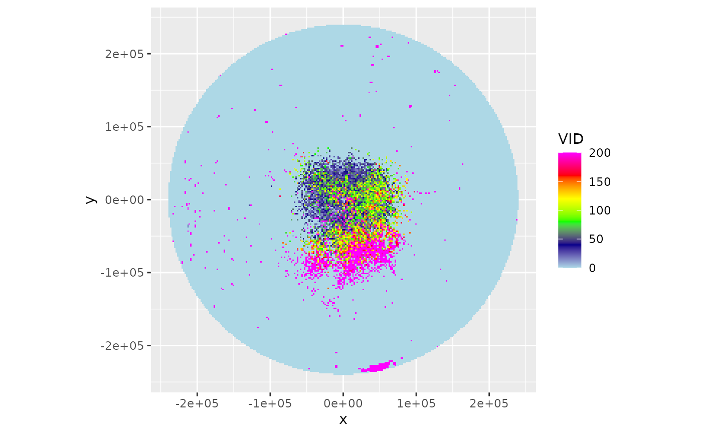
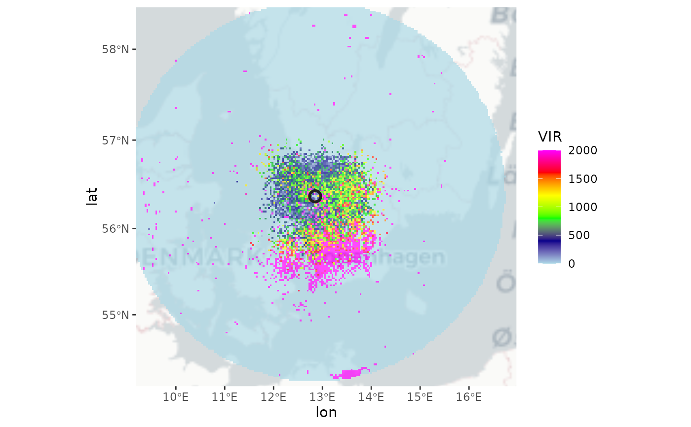
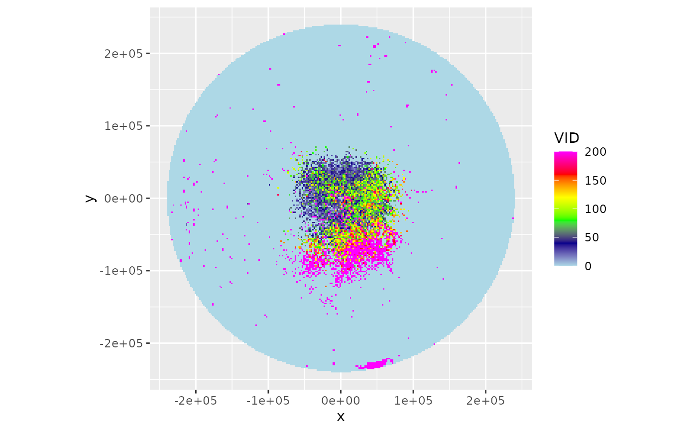
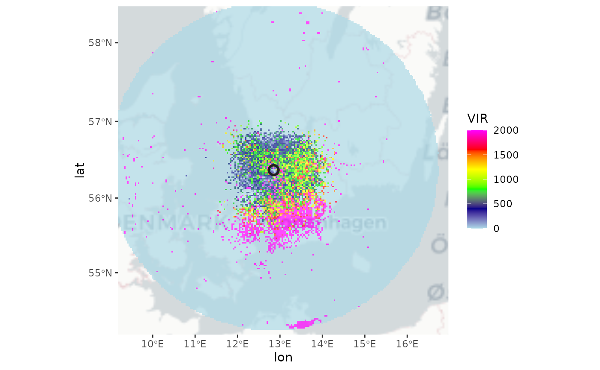

Calculate a plan position indicator (ppi) of vertically integrated density adjusted for range effects
Source: R/integrate_to_ppi.R
integrate_to_ppi.RdEstimates a spatial image of vertically integrated density (vid) based on
all elevation scans of the radar, while accounting for the changing overlap
between the radar beams as a function of range. The resulting ppi is a
vertical integration over the layer of biological scatterers based on all
available elevation scans, corrected for range effects due to partial beam
overlap with the layer of biological echoes (overshooting) at larger
distances from the radar. The methodology is described in detail in
Kranstauber et al. (2020).
Arguments
- pvol
A
pvolobject.- vp
A
vpobject- nx
number of raster pixels in the x (longitude) dimension
- ny
number of raster pixels in the y (latitude) dimension
- xlim
x (longitude) range
- ylim
y (latitude) range
- zlim
Numeric vector of length two. Altitude range, in m
- res
numeric vector of length 1 or 2 to set the resolution of the raster (see res). If this argument is used, arguments
nxandnyare ignored. Unit is identical toxlimandylim.- quantity
Character. Profile quantity on which to base range corrections, either
etaordens.- param
reflectivity Character. Scan parameter on which to base range corrections. Typically the same parameter from which animal densities are estimated in
vp. EitherDBZH,DBZV,DBZ,TH, orTV.- raster
(optional) RasterLayer with a CRS. When specified this raster topology is used for the output, and nx, ny, res arguments are ignored.
- lat
Latitude of the radar, in degrees. If missing taken from
pvol.- lon
Latitude of the radar, in degrees. If missing taken from
pvol.- antenna
Numeric. Radar antenna height, in m. Default to antenna height in
vp.- beam_angle
Numeric. Beam opening angle in degrees, typically the angle between the half-power (-3 dB) points of the main lobe.
- crs
character or object of class CRS. PROJ.4 type description of a Coordinate Reference System (map projection). When 'NA' (default), an azimuthal equidistant projection with origin at the radar location is used. To use a WSG84 (lat,lon) projection, use crs="+proj=longlat +datum=WGS84"
- param_ppi
Character (vector). One or multiple of
VIR,VID,R,overlap,eta_sumoreta_sum_expected.- k
Numeric. Standard refraction coefficient.
- re
Numeric. Earth equatorial radius, in km.
- rp
Numeric. Earth polar radius, in km.
Value
A ppi object with the following parameters:
VIR: the vertically integrated reflectivity in cm^2/km^2VID: the vertically integrated density in 1/km^2R: the spatial adjustment factor (unitless). See Kranstauber 2020 for details. Equal toeta_sum/eta_sum_expected.overlap: the distribution overlap between the vertical profilevpand the vertical radiation profile for the set of radar sweeps inpvol, as calculated with beam_profile_overlap.eta_sum: the sum of observed linear reflectivities over elevation angles. See Kranstauber 2020 for details.eta_sum_expected: the sum of expected linear reflectivities over elevation angles based on the input vertical profilevp. See Kranstauber 2020 for details.
Details
The function requires:
A polar volume, containing one or multiple scans (
pvol).A vertical profile (of birds) calculated for that same polar volume (
vp).A grid defined on the earth's surface, on which we will calculate the range corrected image (defined by
raster, or a combination ofnx,ny,resarguments).
The pixel locations on the ground are easily translated into a corresponding
azimuth and range of the various scans (see beam_range()).
For each scan within the polar volume, the function calculates:
the vertical radiation profile for each ground surface pixel for that particular scan, using beam_profile.
the reflectivity expected for each ground surface pixel (\(\eta_{expected}\)), given the vertical profile (of biological scatterers) and the part of the profile radiated by the beam. This \(\eta_{expected}\) is simply the average of (linear)
etain the profile, weighted by the vertical radiation profile.the observed eta at each pixel \(\eta_{observed}\), which is converted form
DBZHusing function dbz_to_eta, withDBZHthe reflectivity factor measured at the pixel's distance from the radar.
If one of lat or lon is missing, the extent of the ppi is taken equal
to the extent of the data in the first scan of the polar volume.
To arrive at the final PPI image, the function calculates
the vertically integrated density (
vid) and vertically integrated reflectivity (vir) for the profile, using the function integrate_profile.the spatial range-corrected PPI for
VID, defined as the adjustment factor image (R), multiplied by thevidcalculated for the profilethe spatial range-corrected PPI for
VIR, defined as the adjustment factorR, multiplied by thevircalculated for the profile.
Scans at 90 degree beam elevation (e.g. birdbath scans) are ignored.
References
Kranstauber B, Bouten W, Leijnse H, Wijers B, Verlinden L, Shamoun-Baranes J, Dokter AM (2020) High-Resolution Spatial Distribution of Bird Movements Estimated from a Weather Radar Network. Remote Sensing 12 (4), 635. doi:10.3390/rs12040635
Buler JJ & Diehl RH (2009) Quantifying bird density during migratory stopover using weather surveillance radar. IEEE Transactions on Geoscience and Remote Sensing 47: 2741-2751. doi:10.1109/TGRS.2009.2014463
Kranstauber B, Bouten W, Leijnse H, Wijers B, Verlinden L, Shamoun-Baranes J, Dokter AM (2020) High-Resolution Spatial Distribution of Bird Movements Estimated from a Weather Radar Network. Remote Sensing 12 (4), 635. doi:10.3390/rs12040635
Buler JJ & Diehl RH (2009) Quantifying bird density during migratory stopover using weather surveillance radar. IEEE Transactions on Geoscience and Remote Sensing 47: 2741-2751. doi:10.1109/TGRS.2009.2014463
Examples
# \donttest{
# Locate and read the polar volume example file
pvolfile <- system.file("extdata", "volume.h5", package = "bioRad")
# load polar volume
pvol <- read_pvolfile(pvolfile)
# Read the corresponding vertical profile example
data(example_vp)
# Calculate the range-corrected ppi on a 50x50 pixel raster
ppi <- integrate_to_ppi(pvol, example_vp, nx = 50, ny = 50)
# Plot the vertically integrated reflectivity (VIR) using a
# 0-2000 cm^2/km^2 color scale
plot(ppi, zlim = c(0, 2000))
 # Calculate the range-corrected ppi on finer 2000m x 2000m pixel raster
ppi <- integrate_to_ppi(pvol, example_vp, res = 2000)
# Plot the vertically integrated density (VID) using a
# 0-200 birds/km^2 color scale
plot(ppi, param = "VID", zlim = c(0, 200))

# Download a basemap and map the ppi
if (all(sapply(c("ggspatial","prettymapr", "rosm"), requireNamespace, quietly = TRUE))) {
map(ppi)
}
#> Zoom: 5
#> Fetching 4 missing tiles
#>
|
| | 0%
|
|================== | 25%
|
|=================================== | 50%
|
|==================================================== | 75%
|
|======================================================================| 100%
#> ...complete!

# The ppi can also be projected on a user-defined raster, as follows:
# First define the raster
template_raster <- raster::raster(
raster::extent(12, 13, 56, 57),
crs = sp::CRS("+proj=longlat")
)
# Project the ppi on the defined raster
ppi <- integrate_to_ppi(pvol, example_vp, raster = template_raster)
# Extract the raster data from the ppi object
raster::brick(ppi$data)
#> class : RasterBrick
#> dimensions : 10, 10, 100, 6 (nrow, ncol, ncell, nlayers)
#> resolution : 0.1, 0.1 (x, y)
#> extent : 12, 13, 56, 57 (xmin, xmax, ymin, ymax)
#> crs : +proj=longlat +datum=WGS84 +no_defs
#> source : memory
#> names : VIR, VID, R, overlap, eta_sum, eta_sum_expected
#> min values : 0.0000000, 0.0000000, 0.0000000, 0.3189387, 0.0000000, 406.9671616
#> max values : 6.507961e+04, 5.892510e+03, 6.614504e+01, 9.217694e-01, 6.955712e+04, 3.196694e+03
#>
# Calculate the range-corrected ppi on an even finer 500m x 500m pixel raster,
# cropping the area up to 50000 meter from the radar
ppi <- integrate_to_ppi(
pvol, example_vp, res = 500,
xlim = c(-50000, 50000), ylim = c(-50000, 50000)
)
plot(ppi, param = "VID", zlim = c(0, 200))
# }
# Calculate the range-corrected ppi on finer 2000m x 2000m pixel raster
ppi <- integrate_to_ppi(pvol, example_vp, res = 2000)
# Plot the vertically integrated density (VID) using a
# 0-200 birds/km^2 color scale
plot(ppi, param = "VID", zlim = c(0, 200))

# Download a basemap and map the ppi
if (all(sapply(c("ggspatial","prettymapr", "rosm"), requireNamespace, quietly = TRUE))) {
map(ppi)
}
#> Zoom: 5
#> Fetching 4 missing tiles
#>
|
| | 0%
|
|================== | 25%
|
|=================================== | 50%
|
|==================================================== | 75%
|
|======================================================================| 100%
#> ...complete!

# The ppi can also be projected on a user-defined raster, as follows:
# First define the raster
template_raster <- raster::raster(
raster::extent(12, 13, 56, 57),
crs = sp::CRS("+proj=longlat")
)
# Project the ppi on the defined raster
ppi <- integrate_to_ppi(pvol, example_vp, raster = template_raster)
# Extract the raster data from the ppi object
raster::brick(ppi$data)
#> class : RasterBrick
#> dimensions : 10, 10, 100, 6 (nrow, ncol, ncell, nlayers)
#> resolution : 0.1, 0.1 (x, y)
#> extent : 12, 13, 56, 57 (xmin, xmax, ymin, ymax)
#> crs : +proj=longlat +datum=WGS84 +no_defs
#> source : memory
#> names : VIR, VID, R, overlap, eta_sum, eta_sum_expected
#> min values : 0.0000000, 0.0000000, 0.0000000, 0.3189387, 0.0000000, 406.9671616
#> max values : 6.507961e+04, 5.892510e+03, 6.614504e+01, 9.217694e-01, 6.955712e+04, 3.196694e+03
#>
# Calculate the range-corrected ppi on an even finer 500m x 500m pixel raster,
# cropping the area up to 50000 meter from the radar
ppi <- integrate_to_ppi(
pvol, example_vp, res = 500,
xlim = c(-50000, 50000), ylim = c(-50000, 50000)
)
plot(ppi, param = "VID", zlim = c(0, 200))
# }